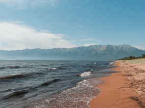
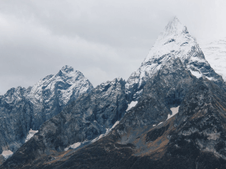
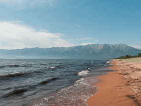
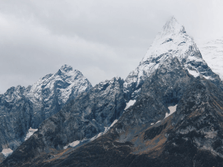
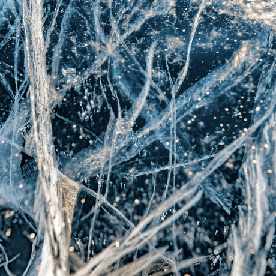

Travels in Russia
The real country is not in the newscasts, but here.

your shelf is top shelf
What didn't we see there?
According to VCIOM polls, 95% of Russians dream of going somewhere, but only 36% plan to to spend a vacation in their home country. What haven't we seen here at home? In fact, Russia is whole universe with the gentle sea of the south, the thick forests of the Sayan Mountains, and the harsh ice of the Putorana Plateau. And to see all without millions in the account, an international passport or hours of flying. As, for example, Vera Bashmakova, a brave young mother who took her three children in an armful, put them in her Lada and and drove 20,000 kilometers across her native country. We have chosen and described some interesting places worthy of your vacation.
Time zones
11
UNESCO Natural Heritage Sites
12
UNESCO cultural heritage sites
16
Natural Reserves
105
Airports
241


 





Curonian Spit

URL
park-kosa.ruHere, in the midst of forests and sand dunes, you can see two water horizons - of the calm Curonian Bay on one side and the rippling waves of the Baltic Sea on the other. on the other. A unique natural area on the edge of the Russian enclave.
This is not the end of the Kaliningrad region. For the traveler and explorer there is also Russia's westernmost point, the Baltic Spit, next door, and the German heritage placer of small seaside towns. The atmosphere of the area eliminates the hustle and bustle, enveloping you in the the tranquility of nature and the smell of the steely, cool sea.
Kolsky

Almost the entire peninsula is above the Arctic Circle. The Saami tundra, from to the south is the taiga. taiga, and to the north, the Arctic Ocean, pretending to be the Barents Sea.
You may have seen Zvyagintsev and even heard the story of the Arctic Teriberka festival. Perhaps the word "Khibiny" is not left under the snow of your school memories of geography lessons. Perhaps you were not interested in the ultra-deep well, and the apatites have long made you apathetic. But your dream of seeing the northern lights is starting come true with ticket to Murmansk.
Altai

URL
YouTubeAltai is one of the most beautiful places in Russia. First of all because of the mountains: if you drive along the ridge, you will see slopes studded with pine trees, mountain rivers and lakes. And if you open the windows in the car, you can get acquainted with the invisible wonder of ...the mountain air.
The climate in the Altai is temperate, so it is best to go here in summer. This way you You can see all the variety of local flora and fauna. Moose roam the forests of Altai, eagles fly over the ridges. eagles fly over the ridges, and roe deer graze on the plains. And the famous Pallas' cats are also inhabitants of the Altai region.
Winter Baikal
Everyone knows Baikal as the largest lake in the world. Many people also know that it is the largest source of fresh water and one of the most beautiful places in Russia.
Of course, that's all true. But Baikal is still an ideal place for competitions in skiing. It's a sport where a skier ties himself to a motorcycle, and the tandem tries to get as much speed as possible on the ice. In March 2019 at the Baikal Mile festival, a world record of 197.011 km/h was set.
Karelia

Siberia does not end in the Urals, but in Karelia: the taiga forming Siberian Siberian larch does not grow west of Vodlozero. But here it reaches 30 meters - the forests of Karelian Karelian national parks have never known an axe because of impassable bogs. Some pines are already more than more than half a millennium. Touch a living creature that saw the sun before Ivan the Terrible saw it. Terrible. In a virgin forest for a hundred kilometers you won't find a trail. And on the rare paths, the trees... a few meters from the ground are marked with bear claws. So that everyone knows who is the master here.
Based on a study topic about the Trans-Siberian Railway, a trip from the capital to Lake Baikal by electric trains.